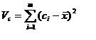
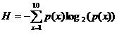

The other option for cluster selection is . This method places either a variance or an entropy value on the cluster’s (mean expression pattern). While the previous method selects tightly constructed clusters, this method focuses on finding clusters having variable centroids. The selected clusters are clusters that have a lot of variability on average over the expression measurements. The clusters are ranked on decreasing centroid entropy or variance, and clusters are selected with the highest centroid variability. The selected clusters must also pass a minimum cluster population. A Cluster Selection Information Viewer is created to describe the selection process. This viewer is similar to the viewer pictured for the Diversity Ranking Cluster Selection algorithm. Two options are available to describe centroid behavior, variance and entropy:
(1)
is centroid variance where is the centroid mean, is the ith centroid value of m values.
(2)
Entropy in this case describes the dispersion of expression values within the expression limits of the centroid. Centroid values are binned within 10 bins evenly dividing the expression value range for the centroid. P(x) is the fraction of centroid points falling in bin x.

The other option for cluster selection is . This method places either a variance or an entropy value on the cluster’s (mean expression pattern). While the previous method selects tightly constructed clusters, this method focuses on finding clusters having variable centroids. The selected clusters are clusters that have a lot of variability on average over the expression measurements. The clusters are ranked on decreasing centroid entropy or variance, and clusters are selected with the highest centroid variability. The selected clusters must also pass a minimum cluster population. A Cluster Selection Information Viewer is created to describe the selection process. This viewer is similar to the viewer pictured for the Diversity Ranking Cluster Selection algorithm. Two options are available to describe centroid behavior, variance and entropy:
(1)
is centroid variance where is the centroid mean, is the ith centroid value of m values.
(2)
Entropy in this case describes the dispersion of expression values within the expression limits of the centroid. Centroid values are binned within 10 bins evenly dividing the expression value range for the centroid. P(x) is the fraction of centroid points falling in bin x.
The cluster centroid is the mean expression vector of a cluster. Often the centroid is used to characterize changes in gene expression for a set of elements in a cluster. Centroid Entropy or Variance Ranking cluster selection is an algorithm used to rank a set of clusters based on Centroid variability and then select candidate clusters meeting supplied criteria. This process will tend to find clusters that meet a minimum size and have relatively higher centroid variability over the expression measurements. The selected clusters will tend to have centroids that vary greatly over the measurements. Be certain to understand how using Centroid Variance versus using Centroid Entropy will affect the outcome.
Parameters
Desired Number of Clusters
This parameter indicates the number of clusters that should be selected from the input set. If during execution it turns out that the number of input clusters is smaller than the number of clusters desired, then all input clusters are returned as the result.
Minimum Cluster Population (# of elements)
The minimum cluster size describes the minimum number of genes or experiments that should be in the cluster. In some cases clusters may have low variability but are only composed of a couple of elements.
Rank Clusters on Centroid Variance
This measure takes the sum of squared errors for the centroid vector where the elements are the centroid values and each is compared to the centroid's mean value.
Rank Clusters on Centroid Entropy
Centroid entropy is a measure of the dispersion of centroid values over the observed range of centroid values. In this case, the high entropy centroids would have values that are widely dispersed between the extremes of the centroid. Note that the range of centroid values could be rather narrow for a centroid of high entropy where the values are evenly dispersed. This measure therefore may select centroids that don't have large expression variability in terms of range of values and hence appear rather flat across measurements.
{kind=link}